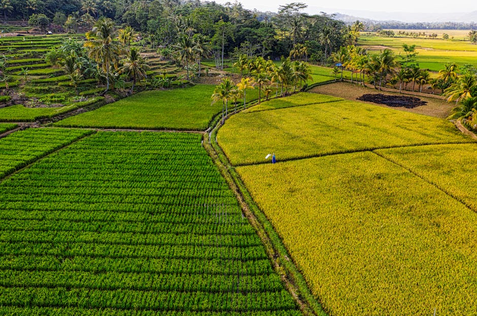

Solutions from space: Rwanda’s smart harvest planning - mapping crop type with AI for rice, maize, Irish potatoes and beans

When weather and crop yields become unpredictable, reliable information is crucial. In Rwanda, digital maps are showing for the first time exactly where which crops grow, helping to better adapt agriculture to climate change. Around one third of all food worldwide is lost between the field and the plate, for example due to pest infestation, incorrect storage or long transport routes. Climate change is exacerbating these losses: irregular rainfall, dry seasons and extreme weather events are jeopardising harvests and making planning increasingly difficult for farmers. Rwanda’s agricultural sector also faces these challenges.
This automated crop type mapping system for Rwanda can be used in various applications e.g. improving agricultural policy and business decisions, integrating with yield estimation frameworks for spatially detailed predictions of seasonal production, crop health monitoring, crop insurance design, value chain assessments, supply and demand forecasting, and more.
It leverages multi-sensor remote sensing data (Sentinel 1 & 2, dynamic world, SRTM). The crop mapping pipeline can be used to map the four most important staple foods in Rwanda (rice, maize, beans, Irish potatoes) in four Rwandan districts, and produce timely, 10-meter resolution crop type maps.
Reference data from different sources including project field work, global research projects, and Rwandan authorities were used to fine-tune the geospatial foundational model Galileo for the downstream task of mapping what type of crop grows where. The reference data collected in the field was supported through the creation of polygon labels with PlanetScope imagery in collaboration with Rwandan academia. The crop mapping pipeline, the fine-tuned model, and the project's reference data are openly available for further usage.
Data characteristics
The overall good accuracy yielded by the approach under conditions with small field sizes, varying elevation and high cloud cover are promising for a successful application in all kinds of regions. Nevertheless, local reference data remains crucial for crop type mapping and an ideal approach should include all types of crops. You can follow the approach to create your own crop type mapping system, utilize the pipeline to fetch satellite imagery for various purposes, get inspired by the use and fine-tuning of the geospatial foundational model and apply it to a different task. You can also use the collected reference data for your own model.
Model characteristics
[Auto-enriched from linked project resources]
Machine learning pipeline for crop type classification in Rwanda using Sentinel-1 and Sentinel-2 satellite imagery. Training scripts include Random Forest and climate-corrected models. Ground reference data covers four districts (Nyagatare, Musanze, Nyabihu, Ruhango) with field observations of maize, beans, rice, and Irish potato collected May-June 2025. The ground truth dataset contains GPS-located farm plots with crop attributes, management practices, and directional photographs. Code: Python scripts for satellite data preparation, image download, and model training at github.com/crop-type-mapping/ML. License: MIT (code), CC-BY 4.0 (ground reference data).
Source: https://dataverse.harvard.edu/dataset.xhtml?persistentId=doi:10.7910/DVN/O7IDTD, https://github.com/crop-type-mapping
How to use
The mapping method developed is freely accessible and fully documented. Training courses with the Rwandan Space Agency and the Office of Statistics ensure that local experts can continue to develop the system independently.
The digital maps do not replace observations and measurements in the field or local knowledge. They complement these to create an improved basis for data-driven decisions, more targeted use of resources and forward-looking risk management using digital tools – for agriculture that offers prospects for the future even under climate pressure.
Datasets
Use cases
Additional resources
About
Powered by / Provided by:
Rwanda Space Agency (RSA), the Rwandan Ministry of Agriculture, Alliance of Bioversity International and CIAT
Catalyzed by:
FAIR Forward - AI for All (GIZ), Digital Transformation Centre Rwanda
Financed by:
BMZ (https://www.bmz-digital.global/en/digital-transformation-and-development-cooperation/)
Authors: Golo Rademacher
Contact: Benson Kenduiyvo (b.kenduiywo@cgiar.org)